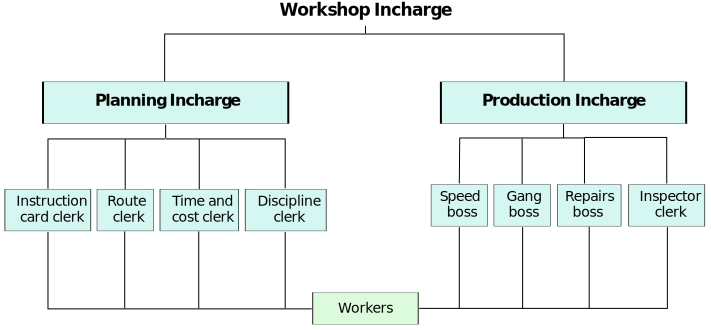

Evolution of Mangement Thought
Classical theories
- Scientific Approach By Taylor
- Administrative Management by Fayol
- Bureaucratic Model By Max Weber
Historical Background
1700 - 1800's {Industrial Revolution}
Changes in industries and growth.
Workers started working in small industries those who were
involved in agricultural activities.
Small shops → Industries
Hydropower Projects were started as a result electricity was regular available.
Machinery Innovation was implemented as a result it overall helps in increasing efficiency &
productivity.
Transport Facilities was also improved, connectivity was for major cities which helped in
overall industrial growth.
Emerging Issues (Problems)
- Large group of labours (how to deal with them)
- People working with machinery (how to make workers aware of working with latest machines and
ensuring that they are working in proper manner)
- Increasing pace of Industry
- Effective solutions of companies problems.
Scientific Management by Taylor
- Concept of scientific management was introduced by F.W Taylor (Frederick Winslow Taylor)
- Born in 1856
Chief Engineer in 1884 at Midvale Steel Works.
Father of Scientific Management.
- Scientific Management is concerned with knowing exactly what we want our men to do and then see it
that they do it in the best and cheapest way.
Taylor Suggested -
- Apply science to work (scientific methods)
- Work is done by customised way, self style followed by workers which is again a serious
issue because it can be time consuming.
- Time and motion studies (workers working in carrying bricks to work area)
Principles of Scientific Management
- Science, Not rule of thumb :-
- This involves use of scientific methods in place of rule of thumb which involves trial &
error methods which is a costly method.
- Where as scientific methods involves investigation of work methods by work study and
finding best practices and developing standard method which can be followed in an
organization.
- Harmony not Discord(conflict) -
- It means or focuses on maintaining harmony (good relations) between workers and
management rather than conflicts, both must realize that they require support of each
other.
- Management should share profits with workers and workers should work hard with loyalty
and must accept the changes for betterment of the organization.
- Cooperation not Individualism -
- It explains that cooperation feeling must be there between management & workers instead
of individualism.
- Management must take suggestions of workers in doing task and while taking important
decision which affect workers, and there should be equal division of workers and
responsibility between workers and management.
- Development of each and every employee -
- This principle involves development of each and every worker to its greatest efficiency.
- Development of workers require proper training and development of workers at workplace
to keep them fully fit according to new methods of working.
Techniques of Scientific Management
- Functional Foremanship -
- Taylor has proposed functional foremanship technique for supervising workers.
- It is a technique which involves supervision of each worker by 8 supervisors, out of
which 4 are from planning department and 4 are from production department.
- 
- Standardization and simplification of working -
- It refers to setting standards for every activity to maximize output and make work task
as simple as possible by eliminating unnecessary steps or products.
- Work study -
- It refers to systematic, objective & critical evaluation of work with the aim of
indentifying how work can be done in the best way.
- In work study, 4 types of studies are undertaken -
Motion study
Method study
Time study
Fatique study
- Differential Piece wage system -
- It is a wage payment system in which a worker who achieves or exceeds production target
gets wage at higher price per piece, while a worker who does not achieve target gets
wage at lower rate per piece.
Contributions of Henry Gantt, Frank and Lillian Gilberth.
Contributions by Henry Gantt :-
- Born in 1861 - 1919 at USA.
- B.Tech + M.Tech Mechanical Engineering.
- Book Title :- Work, Wages & Profits.
Gant Chart
- He developed bar chart for managing work and project execution.
- This contribution is accepted as important management tool even today.
- It provides graphical representation of planning, controlling work and recording progress
towards stages of project.
Industrial Efficieny
- It can be increased only by application of scientific analysis to all work aspects.
- This industrial management rule is to improve the system by elimination of accidents, chances
and waste.
Task and Bonus System
- He introduced flat concept of bonus to be paid to supervisors.
- Based on target achievement of workers working under them and how the teachings of supervisors
helped in improving workers performance.
Social Responsibility of Workers
- Business have certain obligations for society welfare in which they operate for this various
number of measures were used and motivated others to follow the same.
Contributions of Frank and Lillion Gilberth, Fran Bunker Gillberth & Lillian Moler Gilberth (team
of husband and wife) were industrial engineers and efficiency experts and they were engaged in
conducting various experiments to contribute to scientific managment.
Their contibutions are as :-
- Motion Study :
- It includes various studies to identify required moments in doing work so as to
determining least possible movements in doing work.
- This resulted in reducing number of movements in doing a work and increasing workers
efficiency.
- Fatique study :
- It involved expreiments to identify the time by which workers felt fatigue and their
efficiency goes down.
- Based upon this time intervals of rest, rest period were defined for workers.
- It overall helped in increasing productivity.
- Humanistic Approach :
- According to Frank & Lillian Gilberth, ultimate aim to scientific management is to help
workers to reach their full potential as human beings.
Critical analysis of Scientific Management
It created awareness about increasing efficiency by adopting systematic methods against rule of
thumb.
Scientific management has following short comings.
- It is more concerned with problems at operation level and did not focus from managers point.
Therefore it is more relevant from engineering point rather than managment perspective.
- Scientific managment has psychological variables affecting human behaviors at work place, both
in terms of efficiency and motivating workers.
- It is based on mechanization and automation technical aspect rather than management aspect.
- Different Piece wage system is a failure. Even efficient workers, unions opposed this system by
saying that it is new way of exploiting workers.
Fayol's Administrative Management
- French Engineer
- 1949 - General & Industrial management book
Industrial Activities :-
- Technical Activities
- Commercial Activities
- Financial Activities
- Security Activities
- Accounting Activities
- Managerial Activities
Managerial Qualities
Manager must have 6 qualities in order to be a good manager :-
- Physical {health, power}
- Mental {able to understand, learn, judge}
- Moral {polite, initiative, loyalty, etc}
- Educational
- Technical {functions being performed}
- Experience {arise from work}
General Principles of Mangement
- Division of work
- The whole work is divided into smaller task and each individual should do one task of
the work according to his ability.
- Authority and Responsibility
- Authority means power to take decisions and responsibility means to complete the job
assigned on time under the guidance of upper management.
- There should be a
balance between authority and responsibility. Mere responsibility without authority
makes
an executive less interested in discharging duties. Similarly, giving authority without
assigning responsibility makes him arrogant and there is fear of misuse of power.
- Discipline
- the obedience to organizational rules by the subordinates. Discipline requires good
supervisors at all levels, clear and fair agreements and judicious application of
penalties.
- Unity of command
- An individual employee should receive orders from only one superior at a time, otherwise
it will create confusion, conflict, disturbance and overlapping activities.
- Unity of Direction
- Each group of activities having the same objective must have one head and one plan. This
ensures unity of action and coordination.
- Remuneration of Employees
- The overall pay and compensation should be, fair to both
employees and the organization. The employees should be given fair wages so that they
can have
a reasonable standard of living. Wages should be within the paying capacity of the
organisation.
- Subordination of Individual Interest to general interest
- The interest of an organization should take priority over the interest of any individual
employee. In simple words the organisation interest to be prioritiezed over individual
interest.
- Centralization and Decentralization
- Centralization means concentration of decisions making authority in few hands at top
level, whereas distribution of power at every level of management is decentralization.
Both should be balanced as no organization can be completely centralized or completely
decentralized.
- Scalar Chain
- The formal lines of authority between superiors and subordinates from the highest to the
lowest ranks is known as scalar chain. This chain should not be violated but in
emergency employees at same level can contact through Gang Plank by informing their
immediate superiors.
- Order
- People and material should be in suitable places at appropriate time for maximum
efficieny.
- Equity
- The working environment of any organization should be free from all forms of
discrimination (religion, language, caste, sex, belief) and principles of justice and
fair play should be followed. No worker should be unduly favoured or punished.
- Stability of personnel
- A personnel shoud be selected and appointed after strict procedure and the selected
person should be kept at the post for a minimum tenure to show results.
- Initiative
- Workers should be encouraged to develop and carry out their plan for improvements.
Initiative means taking the first step with self-motivation. It is thinking out and
executing the plan.
- Espirit De Corps
- Management should promote team spirit, unity and harmony among employees.
Maximillian Karl Emil Weber
Bureaucratic Model :-
Bureaucracy is a system for controlling or managing country, company or organization, that is
operated by large number of officials, employed to follow rules.
- Maximillian Karl Emil Weber - Born is Germany in 1964-1920
- German Sociologist & Political Economist.
Concept of Bureaucracy arise from the concept of Particularism which was practise at that phase.
- Favouratism :-
Employees were hired on the basis of family relations or connections.
- Weber wanted a rational approach to be practiced in selecting individual rather than Particularism.
- Weber observed/divided power into 3 types:-
- Traditional Power :- It is inherited from family or is given because a person belongs to
particular class of people.
King's son will be the upcoming king of the empire.
- Charismatic Power :- It refers to the power which is derived from Charisma of the leader as
person.
Example :- Jesus Christ, Mahatama Gandhi
- Rational Legal Power :- It refers to the power which is derived from law to the person.
Example :- RBI Governor, Finance Minister.
Characteristics of Bureaucracy :-
- Administrative Class
- Clear Hirercachy
- Division of work as per specialization
- Official Rules & Regulations
- Impersonal Relationships/Competences Hiring
- Official Record Keeping